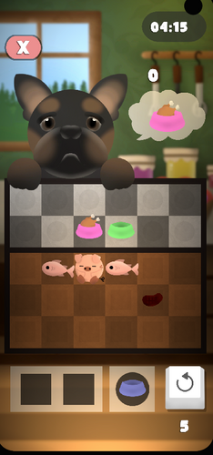
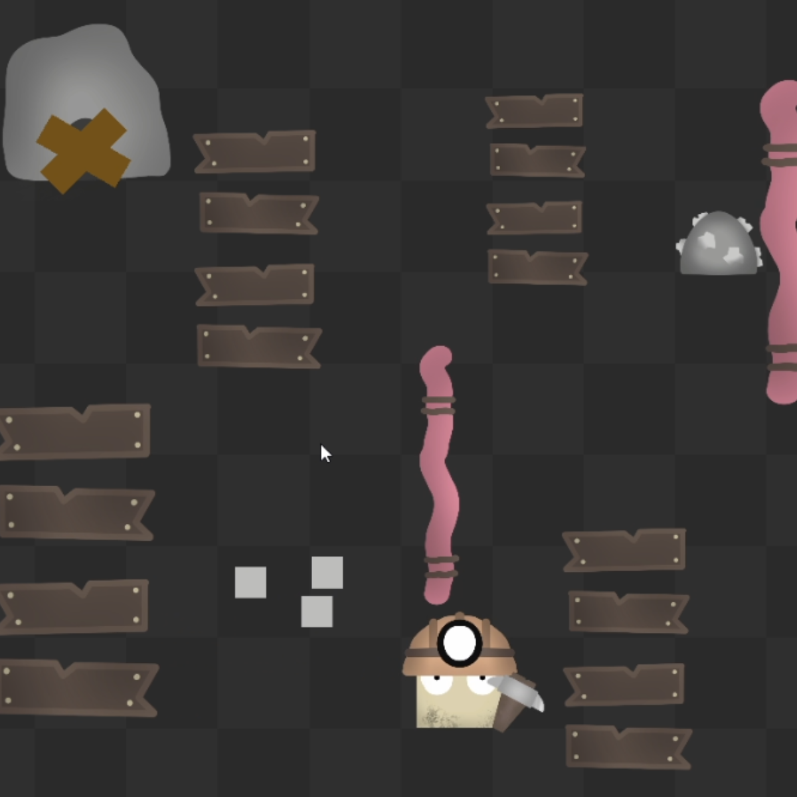
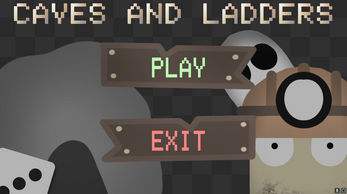
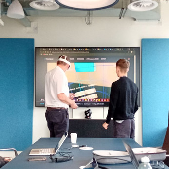
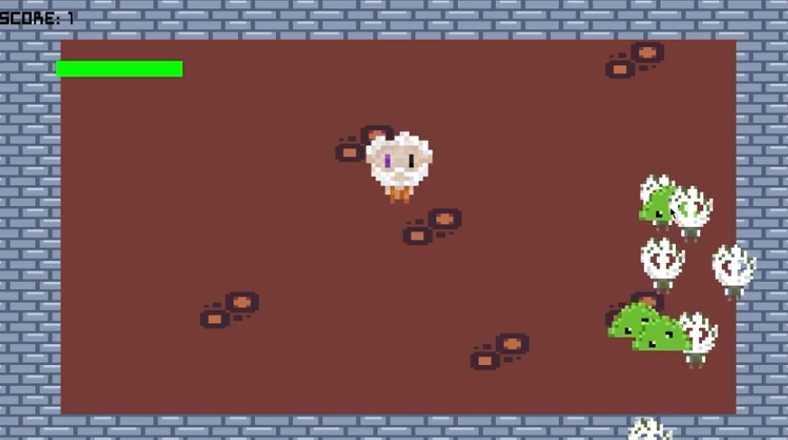
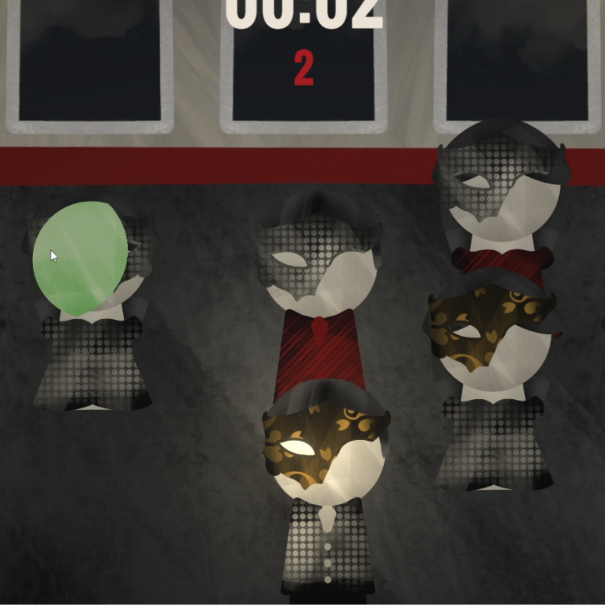
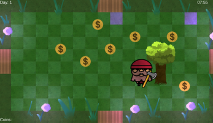
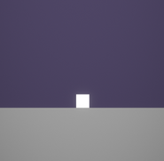
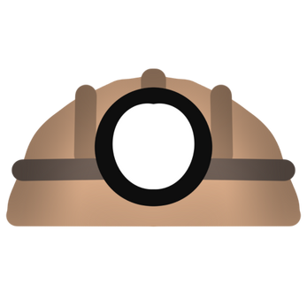
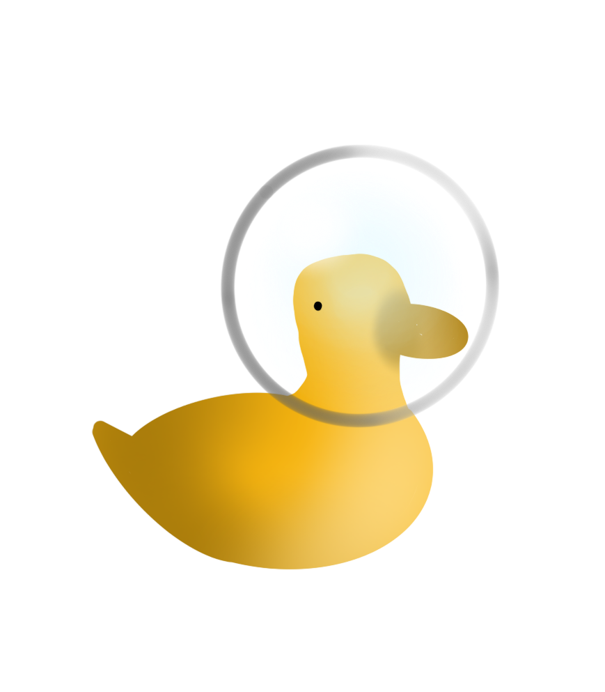

Top Projects
Aisle Survive 2026
About
Main Developer for Skerratt Studios, working on this roguelike shop management game. Early Access May 2026!
Challenges
Designing engaging shop management mechanics, balancing roguelike elements, and collaborating with a remote team to meet tight deadlines.
What I Learned
- Advanced Unity development and optimization for larger projects.
- Team communication and agile workflows.
- Balancing game systems for replayability and fun.
Key Takeaway
Working on my first major project taught me the importance of planning, communication, and adaptability in game development.


Treat Time! 2025
.png)



About
This is my first mobile game. You can currently play it on itch.io via Chrome. I tested on Google Play but a few bugs delayed release — valuable experience.
Challenges
Navigating Google Play's publishing requirements and fixing platform-specific bugs that didn't appear during development. Balancing simplicity with enough depth to keep players engaged.
What I Learned
- Keeping code organised is crucial for long-term projects.
- Understanding player psychology and flow — good difficulty curve, clear goals, responsive feedback.
Key Takeaway
Mobile games suit my style: simple, addictive, and coherent. Functionality and fun matter most.
My Game Audio Project 2025

.png)
.png)

About
I worked in a group of four to recreate and extend the audio for an existing game. The result added a necessary layer of polish.
Challenges
Coordinating audio design across a team of four and ensuring all sound elements felt cohesive. Matching audio cues to gameplay timing precisely.
What I Learned
- Game audio adds another layer that can transform a basic prototype into something memorable.
Key Takeaway
Never leave audio until the end. Or you'll miss the chance to elevate your game's experience.
PS4 Console Game
Check Out My TikTok Video
See the PS4 console game development and 3D level design in action!
Watch on TikTok


About
A console game developed for PlayStation 4. This project showcased my ability to work with console platforms and optimize gameplay for a controller-based experience.
Challenges
Working within specific hardware constraints and adapting gameplay mechanics for controller input rather than keyboard and mouse.
What I Learned
- Developing for console platforms and controller input systems.
- Optimizing game performance for specific hardware constraints.
- Creating engaging gameplay tailored for console audiences.
Key Takeaway
Console development requires different thinking around performance, controls, and user experience compared to mobile or PC platforms.
Technical Projects
Academic and technical projects exploring serious game development, AI, graphics programming, and engine architecture.
VR Ward Project - Final Year Project
Project Overview
This project aimed to create an interactive simulation to help medical students train for ward environments. The simulation works by maintaining a database of patients, each with different medical information and conditions. They are placed in beds throughout the ward, and the user's objective is to walk around and diagnose each patient based on the clinical information provided.
Current Development
The interactivity systems are currently a work in progress and are being actively developed by other students. A key feature I designed is the ability for doctors to add new medical conditions into the database via their computer, allowing the project to scale and remain relevant for extended educational use.


Collaboration & Support
This project was made possible through collaboration with several key partners. The Henderson Fund provided crucial funding after I won their pitching competition. Sandwell Hospital and the University supplied essential medical information and expertise, ensuring clinical relevance and accuracy.
AI Sheep Dog 2025


About
An AI project where I used machine learning to train a dog to herd sheep into a pen. Exploring how AI agents can learn complex behaviours through reinforcement learning.
Challenges
Designing a reward system that encouraged the right herding behaviour without the agent finding exploits. Tuning training parameters to achieve consistent results.
What I Learned
- How reinforcement learning agents are trained and how reward shaping impacts behaviour.
- Integrating ML-Agents with Unity for AI-driven gameplay.
Key Takeaway
AI and machine learning open up exciting possibilities for game behaviour that would be difficult to hand-code. The training process itself is a creative challenge.
Graphics Experimentation
About
I explored shaders and different rendering techniques such as ray tracing and path tracing. To learn more about how game engines render images and objects.
Challenges
Understanding the mathematics behind rendering algorithms and getting ray tracing to perform at usable frame rates.
What I Learned
- What rendering techniques are available and how they impact visuals.
- More practice with C++ and graphics programming.
Key Takeaway
Balancing visuals and performance is key. Understanding the underlying mechanics of rendering helps me make informed decisions in my game projects.
C++ Game Project



About
A solo project to create a small desktop game entirely in C++, focusing on memory management, performance, and architecture.
Challenges
Managing memory manually without the safety nets of higher-level engines. Building core engine systems like the game loop and rendering pipeline from scratch.
What I Learned
- Memory and resource management in C++.
- Building a game loop and core engine systems from scratch.
Key Takeaway
Understanding low-level mechanics strengthens overall development skills. C++ allows full control but requires discipline and planning.
Game Jams
I love participating in Game Jams to push my skills and create innovative games under tight deadlines. Here’s a quick gallery of my favourite jam projects—click any to learn more and play on Itch.io!

Global Game Jam 2026 Sprite mask mechanic, 48-hour jam
Global Game Jam 2023 Grid-based movement, 48-hour jam
Global Game Jam 2022 Award-winning sprite mask, 48-hour jam
GMTK Game Jam 2022 Design & mechanics focus, 48-hour jam
Brackeys Game Jam 2022 Rapid prototyping, 48-hour jam